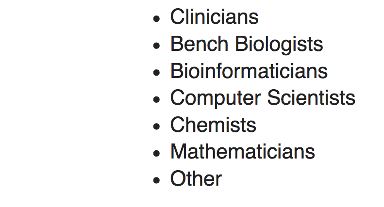
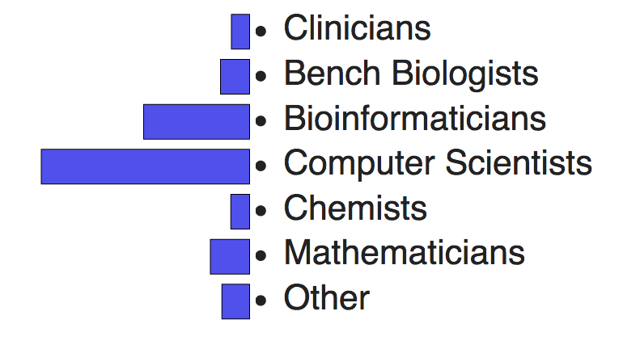
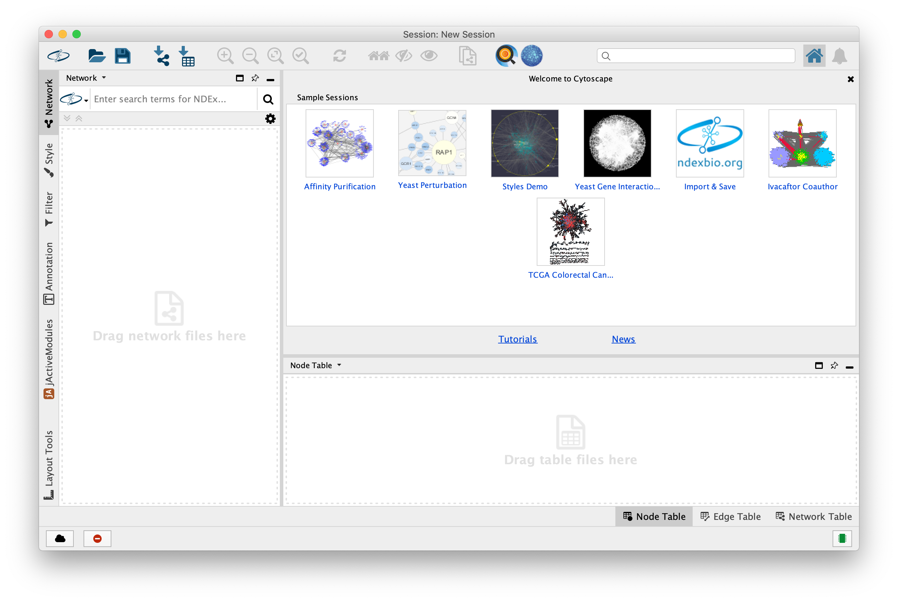
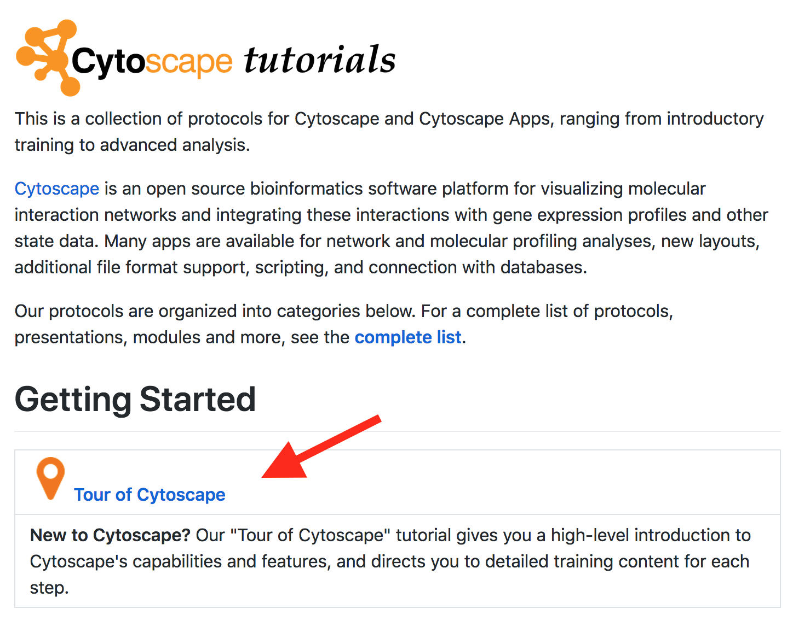

Cytoscape and Network Biology:
for Computer Scientists
Slides: http://tutorials.cytoscape.org
John "Scooter" Morris and Alex Pico
UCSF
21 February 2020
Goals and Motivations
- Understand the major applications of network biology
- Import network and table data into Cytosacpe
- Understand network analysis and visualization algorithms
- Navigate the Cytoscape Ecosystem
- Programmatically access and control Cytoscape services
- Integrate Cytoscape into your bioinformatics pipelines
- Know where to find Cytoscape repos and developer materials
Introductions
- Executive director, Resource for Biocomputing, Visualization, and Informatics
- Roving Engineer, National Resource for Network Biology
- Cytoscape team since 2006
- Author of over a dozen Cytoscape apps
Introductions
- Associate director, Bioinformatics Core
- Executive director, National Resource for Network Biology
- Cytoscape team since 2006
- Author of a handful of Cytoscape apps and RCy3
Introductions


Introductions
- Java applications (core, apps)
- R or Python scripts (RCy3, PyCy3)
- Javascript applications (cytoscape.js, ecosystem apps)
- Web services (ecosystem services)
- Websites (using ecosystem components)
Tour of Cytoscape
- Launch the latest version of Cytoscape
Tour of Cytoscape


- Open CyBrowser
- Enter URL: tutorials.cytoscape.org
Tour of Cytoscape

- Click on Tour of Cytoscape
- Resize window to your preference
Tour of Cytoscape
- Loading networks
- Loading tables
- Search and selection
- Changing visual attributes
- Command line and CyREST
- Exporting images
- Saving sessions
Hands-on Exercises
Hands-on Exercises
What have we learned?
Working on Your Projects
Take the rest of the time to develop Cytoscape into your own projects to put into practice what you've just learned